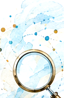
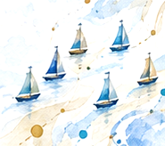
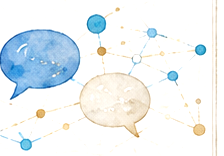
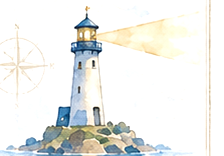
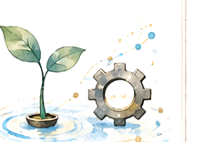
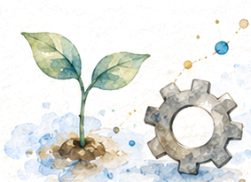

こんな困りごとはありませんか？
「わかってはいるけれど、手をつけられていない」
その悩み、あなただけではありません。
日々の忙しさの中で後回しになりがちな困りごとを、まずは一緒に見える化するところから始めます。ひとつでも当てはまれば、本プロジェクトがお役に立てるかもしれません。
-
1予約・問い合わせ対応
電話や紙、複数のサイトに予約・問い合わせ情報が散らばっていて、対応に追われてしまう。

-
2紙・Excel管理
顧客情報や台帳が紙やExcelのままで、担当者しか内容がわからず、引き継ぎが不安。

-
3発注・在庫の勘頼み
発注や仕入れの判断が「店長の勘と経験」に頼りきりで、数字として残っていない。

-
4日報・現場記録
日報や記録づけが属人化していて、忙しいと後回しになり、正確な記録が残らない。

-
5熟練者の勘とコツ
ベテランのやり方や判断が言葉にできず、若手やパート・アルバイトに伝えづらい。

-
6何から始めるか
AIやデジタル活用に興味はあるものの、何から手をつければよいのか分からない。

本プロジェクトでできること
「1社で頑張るDX」ではなく、
仲間と一緒に取り組む協働型のDXです。
本プロジェクトは、個社への一方的な支援ではなく、同じ業種・同じ悩みを持つ事業者どうしが協働しながら、小さな一歩から取り組む実証プロジェクトです。
-
STEP 01
見える化する
日々の業務の中に埋もれている困りごとを、専門家や仲間と一緒に整理し、共通の課題として言語化します。

-
STEP 02
小さく試す
いきなり大きな投資はせず、AIやデジタルツールを使って、まずは小さな範囲・短い期間で試してみます。
-
STEP 03
地域に広げる
取り組みの成果や工夫を、事例・テンプレートとして地域に共有し、次に挑戦する事業者の背中を押します。

個社支援ではなく、『協働型DX』であることが本プロジェクト最大の特徴です。
参加すると得られること
参加事業者にとってのメリット
説明会・ワークショップ・実証を通じて、以下のようなメリットが得られます。
-
1
困りごとの整理ができる
課題を見える化し、何から始めるかを整理できる。
-
2
他社の工夫やノウハウを知れる

同じ悩みを持つ事業者の工夫や進め方を学べる。
-
3
専門家と一緒に小さく試せる

専門家と伴走しながら、小さな実証から始められる。
-
4
低コストでDXに着手できる

大きな投資の前に、低コストで可能性を確かめられる。
-
5
県内の取組事例として発信される
成果や工夫が地域に共有され、次の挑戦につながる。
募集テーマ
今年度は、3つのテーマで
参加事業者を募集します
同じ業種・同じ悩みを持つ事業者どうしでチームを組み、テーマごとに共通する課題の解決に取り組みます。
-
理美容
こんな悩み
施術履歴や薬剤配合、顧客情報が紙のカルテと担当者の記憶に依存し、再来店の状況も見えづらい。
顧客カルテのデジタル化を通じて、業務の効率化と再来店の見える化に取り組みます。
-
飲食
こんな悩み
予約や注文情報が電話・紙・複数サイトに分散し、仕入れや仕込みの量は経験と勘に頼りがち。
POSレジ等で売上・注文データを見える化し、発注や在庫管理の改善に取り組みます。
-
バックオフィス
こんな悩み
見積・請求・議事録作成などの定型業務が特定の担当者の手作業に依存し、AI活用も個人任せ。
AIエージェントの構築・活用を通じて、定型業務の効率化と組織的な定着に取り組みます。
※ 上記は現時点で想定している取組内容です。実際の課題・進め方は、参加事業者どうしのワークショップを経て決定します。対象業種が迷う場合は、お気軽にお問い合わせください。
進め方
専門知識がなくても、
無理なく進められます
「学ぶ」→「見える化する」→「小さく試す」の順に、段階を踏んで進めます。途中でつまずいても、専門家や仲間がサポートします。
-
1
学ぶ
基礎知識をセミナー・研修で習得
-
2
見える化する
困りごとを仲間と一緒に整理
-
3

小さく試す
低コストでAI・デジタルを試行
支援対象・参加対象
県内小規模事業者と、
それを支える仲間たち
参加事業者を中心に、同じ悩みを持つ仲間・支援機関・専門家・広島県が周りを支える体制です。
参加事業者あなたの会社・お店
-
同じ悩みを持つ仲間
同一テーマの参加事業者
-
学生・若手人材
開発・改善の担い手
-
支援機関・業界団体
募集・フォローアップ
-
広島県
事業の運営・広報
-
IT・DX専門家
伴走支援・技術指導
こんな方におすすめです
- 広島県内で理美容・飲食・バックオフィス関連の業務を行っている（目安：従業員10人以下の小規模事業者）
- 経営者ご自身が現場の業務も担っている
- ITやデジタルは得意ではないが、まずは「学ぶ」ことから始めたい
- 同じ悩みを持つ他の事業者と一緒に取り組んでみたい
スケジュール
実施スケジュール（予定）
募集から成果発信まで、以下のような流れで進める予定です。
-
1
9月頃〜
参加募集
支援機関・本LP・SNS等を通じて参加事業者を募集
-
2
説明会
説明会・個別相談
事業の内容や進め方をご説明し、疑問や不安にお答えします
-
3
10月頃〜
課題整理ワークショップ
同じテーマの事業者どうしで、共通する困りごとを整理
-
4
〜12月頃
小さく試す（実証）
AI・デジタルツールを使って、低コスト・短期間で試行
-
5
〜2月頃
実装・効果測定
選抜事業者で本格的に運用し、効果を数値で確認
-
6
2027年3月頃
成果発信
取組の成果を事例として地域に発信
※ 上記は現時点（2026年8月）の想定スケジュールです。契約内容の確定にあわせて前後する可能性があります。詳細は説明会にてご案内します。
まずは一歩、踏み出してみませんか
小さな船も、船団になれば、越えられる潮がある。
「難しそう」「うちには関係ない」と思う前に、まずはお気軽にご相談ください。
※ 説明会の日程・お申し込みフォーム・お問い合わせ先は現在調整中です。確定次第、本ページに掲載します。